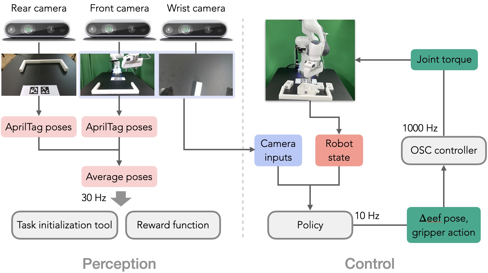

FurnitureBench Overview
Contents
FurnitureBench Overview#
FurnitureBench is a reproducible real-world furniture assembly benchmark for long-horizon and complex robotic manipulation. To make FurnitureBench easy to reproduce, we opt for 3D printing objects when possible and products widely accessible across the world. We provide detailed instructions and software tools for the system setup in Installing FurnitureBench, which allows a user to build a new environment with nearly the same configuration.
Environment Overview#
Our physical robot environment mainly consists of one 7-DoF Franka Emika Panda robot arm with a default parallel gripper and three Intel RealSense D435 RGB-D cameras. For the workspace, we use a black IKEA TOMMARYD table and attach 3D-printed obstacles on the table. The green photography backdrop is used for a consistent background and a LED light is used to vary lighting conditions.
The robot system is controlled via server and client computers. The client handles I/O operations, motion planning, and policy inference while the server manages real-time robot control.
System Overview#
In FurnitureBench, an agent receives an observation (the proprioceptive robot state and images from front and wrist cameras) and takes an action (delta end-effector pose and a gripper action) at a frequency of 10 Hz. For the reward function and initialization tool, we estimate furniture poses using AprilTag from the front-view and rear-view images.
